页面布局是第 3 版定的，没有变；这一版按 docs/scheduled-tasks-design.md 第 4 版（D1–D4 已定）更新了详情面板和创建卡，并加了一次性的定时。Scheduled 只在左侧导航里，不进任何工作区的会话列表。页面参考 macOS 提醒事项（Reminders）的「计划」列表：按日期排列每个定时任务的下一次执行，点一行在右侧打开详情面板（相当于 ⓘ），列表末尾一行直接输入一句话。每一帧都是真实的 Web 控制台，新增部分按控制台自己的样式注入。界面文案英文，注释中文；名称、时间、版本号都是演示数据。
接 1/2。人只对目标、风险、预算和授权负责：创建卡上各一行，只在创建和信封变大时按一下。信封 = 工作区、权限、每周次数、单次时长。信封内的修改直接生效，可以 Undo。需要人处理的事项都进 Waiting on you。
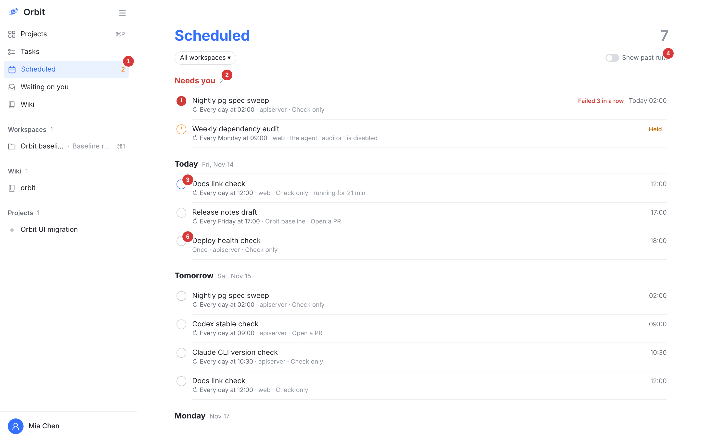
标题和数字的样式照搬 Reminders：大号彩色标题，右边是总数。顶部按工作区筛选。
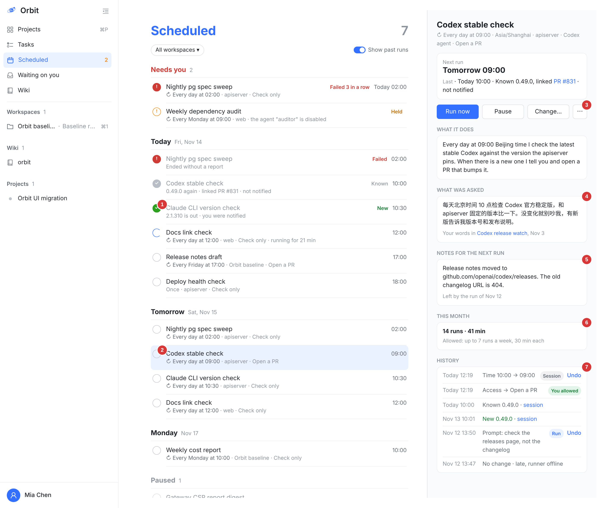
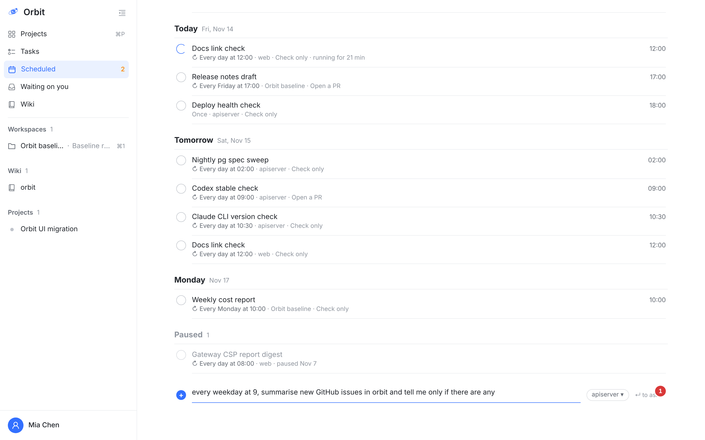
这一行接收的是一句话，不是表单。
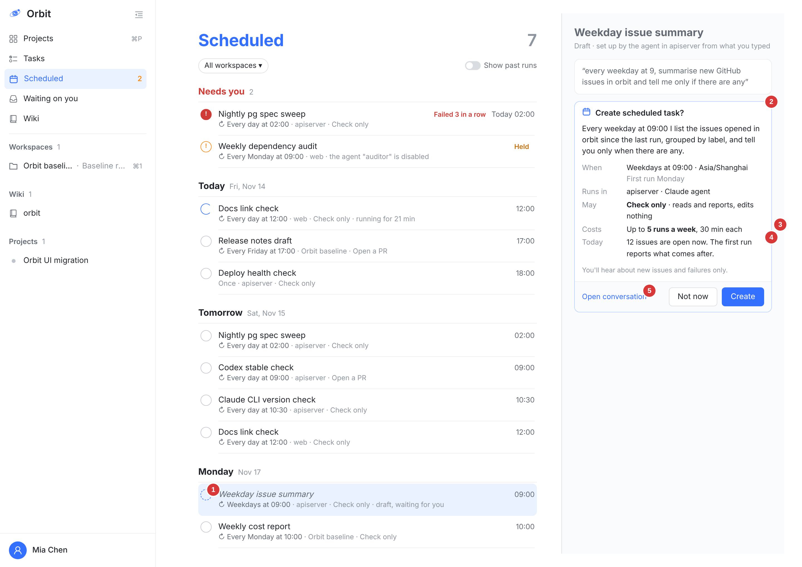
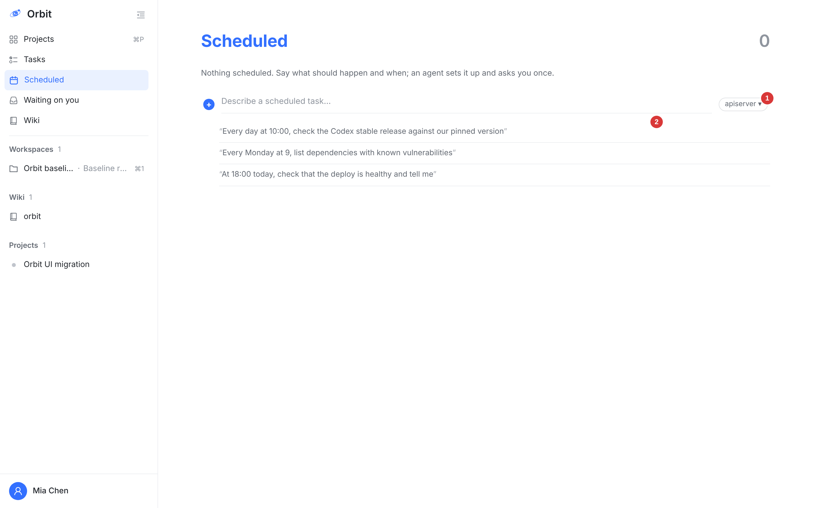
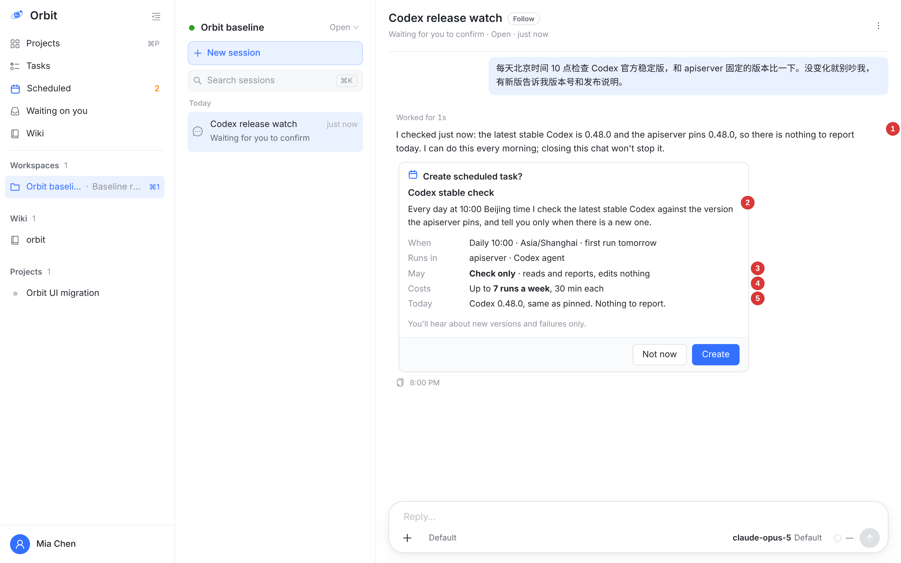
卡上没有可编辑的字段，只有 Create 和 Not now；不对的地方直接接着说。
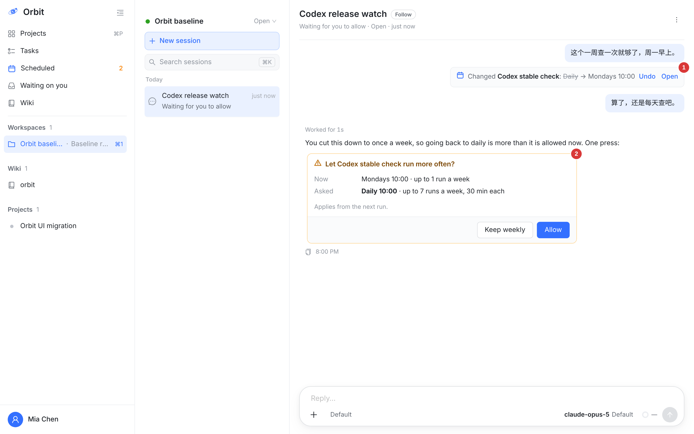
如果是任务自己在某次执行里降频，信封不缩，之后恢复不用再问：授过的权不问第二遍，收回的权要重新问。
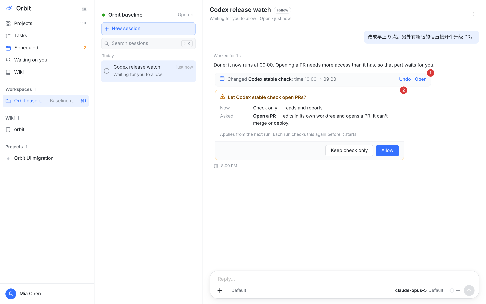
在任意会话里都能改，不一定要回到创建它的那个会话。这一帧和第 3 版相同。
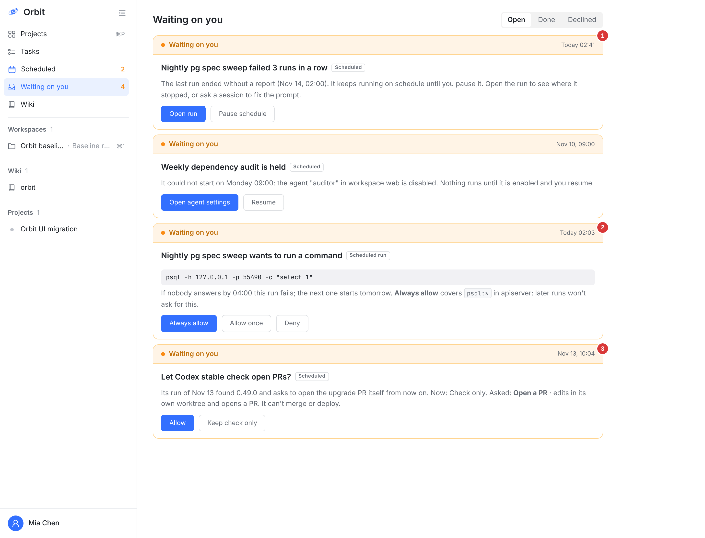
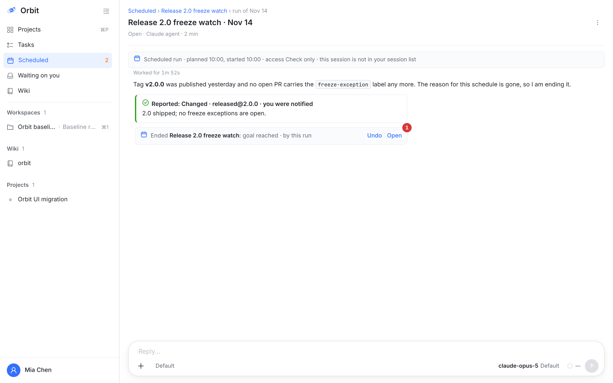
它不能给自己扩权，见 ④ 的第 3 条。
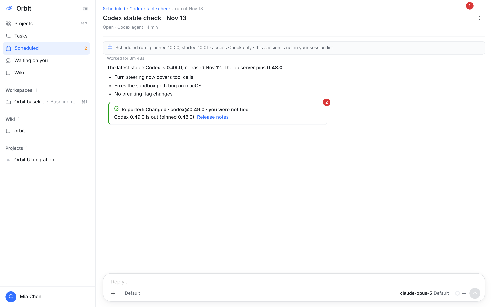
这一帧和第 3 版相同。
| 人负责 | 怎么体现 | 按几下 |
|---|---|---|
| 目标 | 说一遍，原话原样保存；卡上读回一句 | 0 |
| 风险 | 卡上 May 一行 | 创建 1 次；信封变大时 1 次 |
| 预算 | 卡上 Costs 一行 | |
| 授权 | Create / Allow，只能本人按 | |
| Agent 负责 | 怎么体现 | |
| 名称、执行内容、判重的 key | 详情面板里可读，改了记历史 | |
| 时间、时区、首次执行 | 卡上 When；时区用你说的，没说用按 Create 的那台设备的 | |
| 起点 | 创建前先做一遍，卡上 Today | |
| 记忆 | 每次执行留给下一次的备注 | |
| 调整 | 信封内自己改、降频、收工，可 Undo | |
| 要不要告诉你 | 只有新发现或需要你时才通知 | |
| 暂停、立即执行、终止、删除 | 页面上直接按，或在会话里说 | |
| 会话栏里的入口行 | 改成左侧导航的 Scheduled |
| 新建按钮、编辑对话框 | 改成在会话里说；页面上只有 Change… |
| 通知方式三选一 | 改成固定规则 |
| 详情页的失败、挂起横幅 | 改进 Waiting on you |
| 单独的详情页 | 改成右侧详情面板（第 3 版） |
| 按状态分组的表格 | 改成按日期排列的时间线（第 3 版） |
| “扩大权限要卡” | 改成一条规则：超出信封才要卡，预算也在信封里（第 4 版） |
| 创建卡的 Name / Access 字段行 | 改成读回一句目标 + May、Costs、Today（第 4 版） |
| 只有周期性的 | 加一次性的 Once（第 4 版） |
| 左侧导航 | 加 Scheduled 一项和计数 |
新增 src/web/src/components/Scheduled*.tsx | 时间线、详情面板、输入行、草稿 |
| 会话 transcript 卡片 | 创建卡、信封卡、修改记录行、执行会话顶栏、上报卡 |
OwnerRequestCard.tsx | Scheduled / Scheduled run 两类卡片 |
src/web/src/api.ts | schedules / runs 接口 |